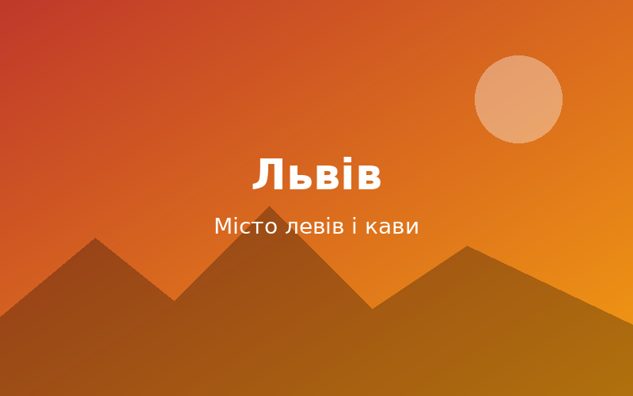
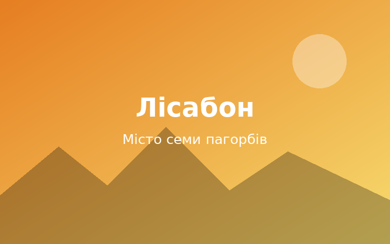

Львів
Місто лева, де бруківка пам'ятає століття, а кожен двір ховає кав'ярню.
Привіт, мандрівнику! Подорожі з друзями — це спільний сміх на пероні, пізні розмови в кав'ярнях і історії, які згадуєш роками. Ми зібрали три міста, що назавжди лишилися в наших серцях. Готовий зазирнути в наш щоденник?


Місто лева, де бруківка пам'ятає століття, а кожен двір ховає кав'ярню.
Готичні шпилі, астрономічний годинник і ранковий туман над Карловим мостом.
Білі будинки, блакитна плитка азулежу та смак свіжих паштелів.
Global Adventures Blog — це наш спільний щоденник подорожей. Тут ми ділимося історіями, фото та порадами, щоб ви теж захотіли зібрати рюкзак.